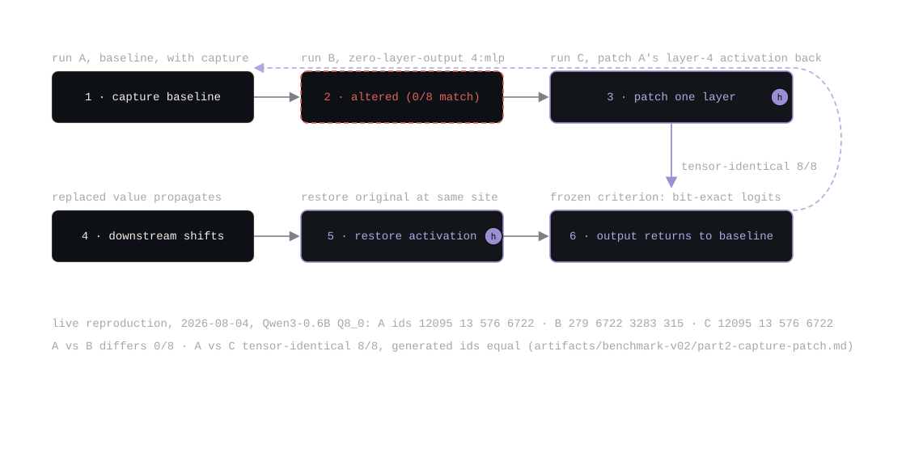
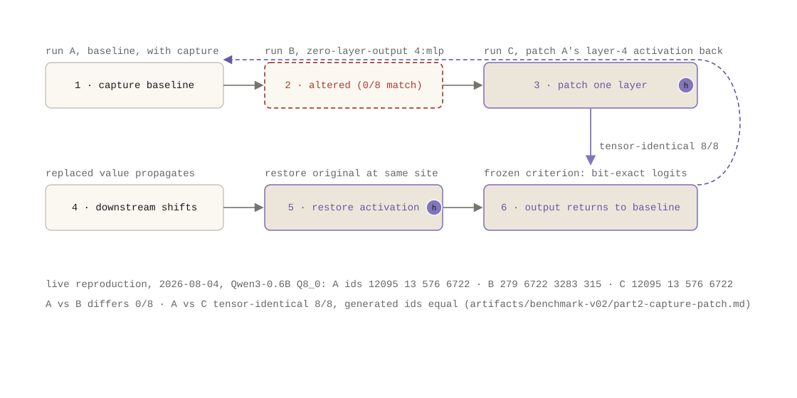

مسودة مكتملة باستشهادات صريحة. نص الالتقاط → المقارنة → التعديل → الاستعادة أدناه أُنتج
مباشرة في 2026-08-04 بتشغيل سير عمل v0.2 المثبّت
(scripts/research_example_capture_patch.sh) ومسجّل في
artifacts/benchmark-v02/part2-capture-patch.md. الشكل مضمّن كـ SVG (نسختا
الوضع الداكن والفاتح).
الـ probe يقدر يقول إن اتجاهًا في الطبقة l يحمل معلومات عن جذر الكلمة. لا يقدر يقول إن النموذج يستخدم داك الاتجاه لإنتاج مخرجه. الفجوة هي الفرق بين قابلية الفك والاستخدام السببي، وهي بالضبط الفجوة اللي يهتم بها السؤال البحثي.
إجابة v0.2، كقيد: التدخّل لا يكون ذا معنى علمي إلا لما تكون هوية الـ tensor والطبقة وموضع الـ token ومسار التنفيذ صريحة. الـ patch اللي لا يقدر يقول بدقة ما استبدل يثبت شيء؛ والاستعادة غير المطابقة للبت تثبت أقل.
يسجّل --capture-activations الـ tensors الحية بس للسجلات المختارة صراحةً، عند
إحدى مراحل الـ hook الدلالي الست (قبل الطبقة، بعد attention، بعد mlp، بعد الطبقة، قبل logits،
بعد logits)، مرشَّحًا بالطبقة والمرحلة وموضع الـ decode، مع سقف سجلات اختياري
(CHANGELOG.md، v0.2). كل سجل يحمل مصدره: المرحلة والطبقة والطور وموضع
البداية وتجزئة الـ tensor ومصدر النموذج والـ tokenizer وGGUF وتجزئة الـ prompt (مع إمكانية
حذف الـ prompt) ومعرّفات tokens المدخلة والمولّدة وتجزئة إعداد الالتقاط بالضبط. صيغة الـ artifact
مُرقّمة (0.2.0-experimental) ولا تحمل أي ضمان توافق.
يستبدل --activation-patch تنشيطًا حيًا في مكانه من artifact ملتقط. حسم المصدر لا
لبس فيه بالبناء: الهدف يحلّ إلى سجل مصدر واحد بالضبط (مؤهل بالموضع أو فريد)، وأي شيء آخر خطأ
قاسٍ؛ وتُتحقق العائلة والطبقة والعرض والـ dtype وترتيب البايت؛ والهدف اللي لم يُطبَّق أبدًا
فشل لا تخطٍّ صامت؛ والـ hook لا يخصص شيء بعد التهيئة (CHANGELOG.md، v0.2).
سير عمل v0.2 المثبّت على Qwen3-0.6B Q8_0 (الطبقة 4، المرحلة بعد mlp، 4 tokens مولّدة، حرارة 0)،
مُعاد في 2026-08-04 (artifacts/benchmark-v02/part2-capture-patch.md):
--zero-layer-output 4:mlp، نفس الالتقاط. مخرجات
الـ MLP في الطبقة 4 تُصفَّر قبل إضافة الـ residual؛ بقية الشبكة ترى تيارًا مختلفًا.status=differs، 0 من 8 سجلات متطابقة.
المخرجات تغيرت: معرّفات الـ tokens 12095 13 576 6722 → 279 6722 3283 315.--activation-patch: تنشيط الطبقة 4 بعد mlp من A
أُعيد في prefill وكل موضع decode (4 تطبيقات عبر 4 أهداف).status=tensor-identical، 8 من 8 سجلات
مطابقة للبت؛ المعرّفات عادت إلى 12095 13 576 6722؛ تجزئات النموذج والـ
tokenizer والـ prompt والمدخلات كلها متطابقة. الاختلافات الوحيدة مصدر مسجّل (اسم التجربة
ووسائطها وتجزئة إعداد الالتقاط وargv والطابع الزمني)، وcreated_at_unix ودليل
مخرجات الالتقاط هما الحقلان اللذان تُحدَّد لهما أداة compare-artifacts أن
تتجاهلهما.هذا هو معيار الاستعادة المجمّد: لازم تكون logits الـ patch الملتقطة مطابقة للبت لخط الأساس، متساوية sha256 على مستوى الـ tensor، مع رفض مساواة النص المولّد صراحةً كدليل غير كافٍ (تعليق السكربت نفسه يقول داك).


تشغيل السكربت المثبّت على الثنائي الحالي أنتج مفاجأة تستحق التسجيل لا الإخفاء: يخرج السكربت
بالفشل رغم أن المعيار نجح. يؤكد السكربت أن حالة مقارنة A مع C هي النص الحرفي
"identical"؛ بينما يبلغ compare-artifacts الحالي
"tensor-identical" لما تكون كل السجلات المحاذية مطابقة للبت بس المصدر المسجّل
مختلف. مفردات الحالة تطورت بعد v0.2 (أصناف مقارنة v0.5 هي exact-semantic وexact
وoutput-equivalent وtop1-equivalent وfailed)، وسكربت عصر v0.2 لم يُحدَّث.
الفحص الجوهري لا لبس فيه: 8/8 سجلات متطابقة، معرّفات الـ tokens متساوية، كل حقول الجلسة
الجوهرية متساوية (artifacts/benchmark-v02/part2-capture-patch.md القسم 3). هذا
انجراف الـ harness، المعيار صمد؛ نص التأكيد لم يصمد، وهو بالضبط ما لازم تبرزه سلسلة عن الثقة
لا أن تنعّمه.
ممكن قراءة الجلسة نفسها بطريقتين. رؤية الـ probe: اتجاه في الطبقة 4 قابل للفك. الرؤية السببية:
تصفير مخرجات الـ MLP في الطبقة 4 يغيّر المخرج، واستعادة التنشيط الدقيق تستعيد المخرج الدقيق،
tensor بتensor، حتى الـ logits المسجّلة. الادعاء الثاني أقوى بدقة، وهو اللي بُني مخطط artifact
v0.2 لدعمه: تحاذي المقارنة السجلات على (المرحلة، الطبقة، الطور، موضع البداية)،
ترفض التكرارات، وتبلغ عن مساواة بتية لكل سجل وmax/mean/RMS وcosine وL2 ونسبية L2
(CHANGELOG.md، v0.2).
0.2.0-experimental قد يتغير من غير إشعار؛ لا شيء في v0.2 التزام
توافق.دورة الالتقاط → المقارنة → التعديل → الاستعادة هي سلسلة الأدوات اللي حدّدت لاحقًا فشل حدود الكمّية سببيًا، قصة الجزء 6. والطلب على المصدر بهذه الدرجة من التفصيل هو ما حوّله v0.5 إلى صيغة artifact قابلة للتحقق.